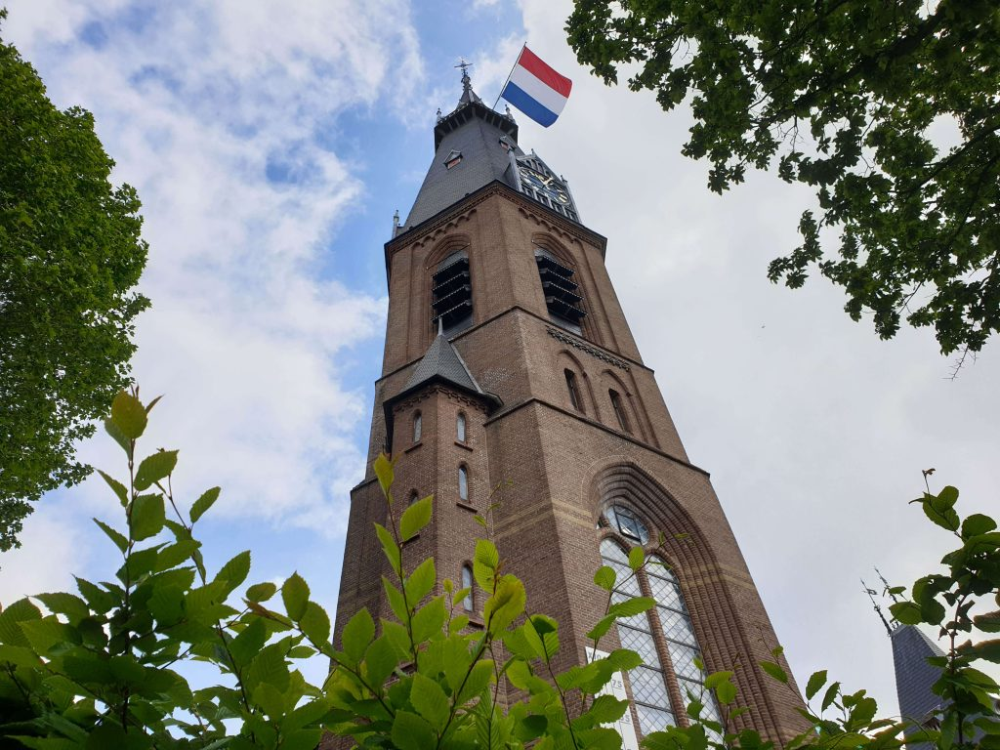
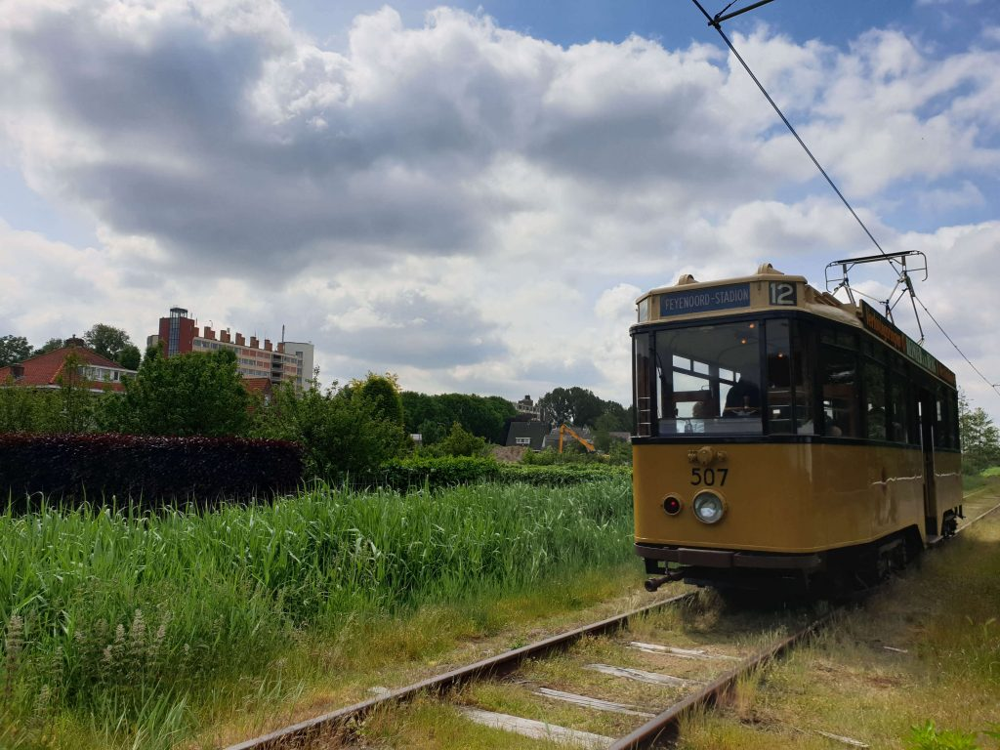

- Amstelveen staat bekend om zijn groene omgeving, met veel parken en natuurgebieden, waaronder het Amsterdamse Bos.
- Het Stadshart van Amstelveen is een levendig winkelgebied met veel boetiekjes, restaurants en culturele voorzieningen.
- Amstelveen herbergt een diverse internationale gemeenschap, mede dankzij de nabijheid van de luchthaven Schiphol en verschillende internationale bedrijven.
- De stad heeft een rijke geschiedenis die teruggaat tot de middeleeuwen, met historische bezienswaardigheden zoals de oude dorpskern en de Sint-Urbanuskerk.
- Amstelveen staat bekend om zijn bloeiende kunstscene, met het Cobra Museum voor Moderne Kunst en diverse galeries die zowel lokale als internationale kunstenaars presenteren.
Op naar de top voor een mooi uitzicht? Dat doe je door de Urbanuskerk te beklimmen in Amstelveen. In het najaar van 2018 heeft er een vreselijke brand gewoed waardoor het schip van de kerk deels is verwoest. Maar gelukkig is de toren behouden gebleven en kan die nog steeds worden beklommen. Vanaf de top, die je bereikt na 262 treden, heb je een weids uitzicht over het Amsterdamse Bos, de Amstelveense Poel en in de verte zie je zelfs Schiphol. 
Geen zin om terug te fietsen naar Amsterdam met je huurfiets of wil je gewoon even uitrusten en toch wat zien? Stap dan aan boord van de historische tram. De oude Haarlemmerspoorlijnen die zijn aangelegd tussen 1912 en 1918 zijn op de zondagen in het hoogseizoen in gebruik door de historische tram. De elektrische museum tramlijn voert van Amsterdam naar Amstelveen en vica versa en gaat twee keer per uur.
